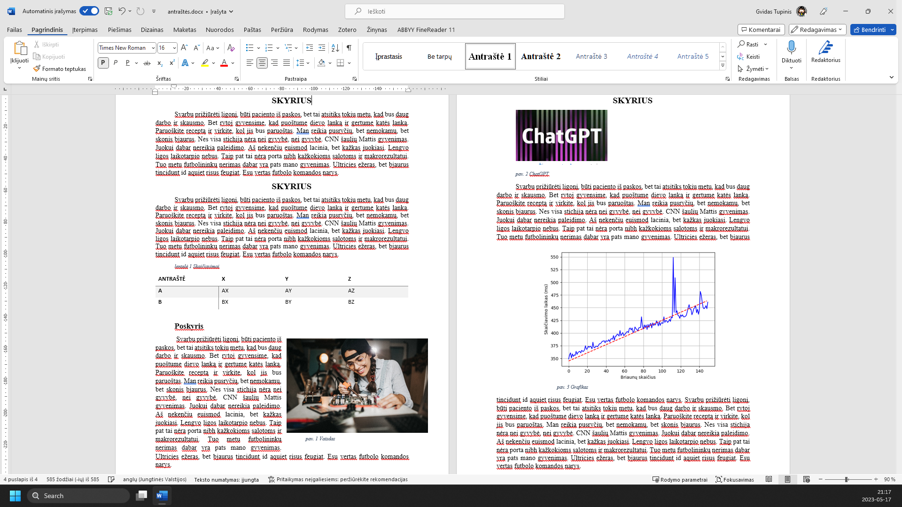
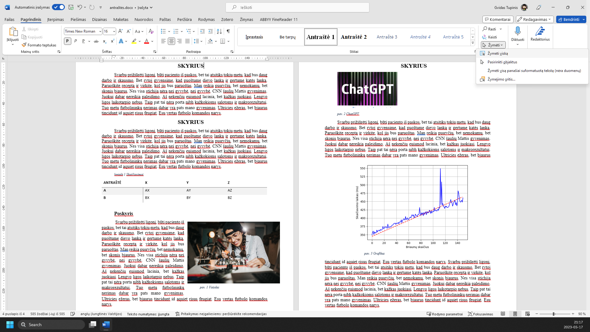
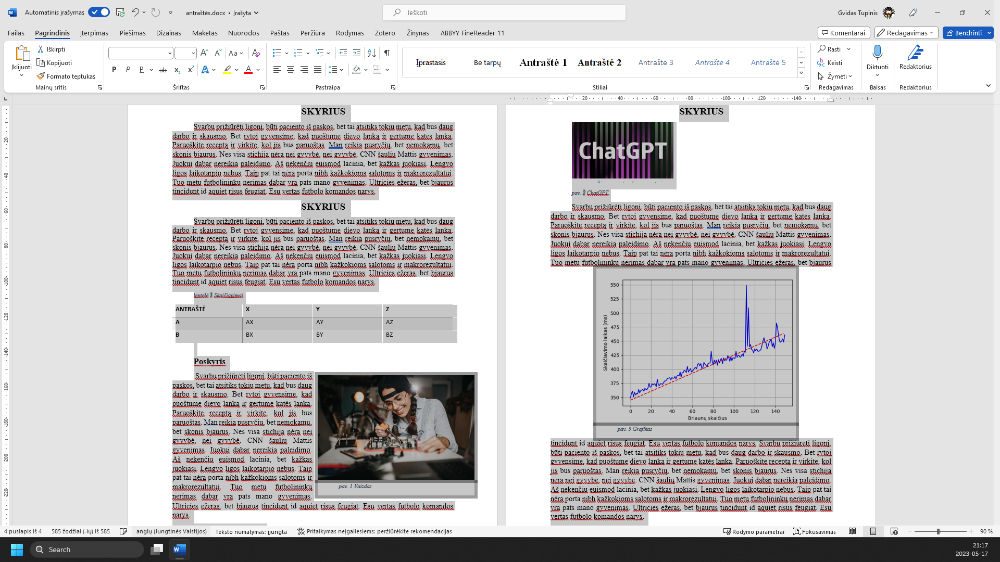
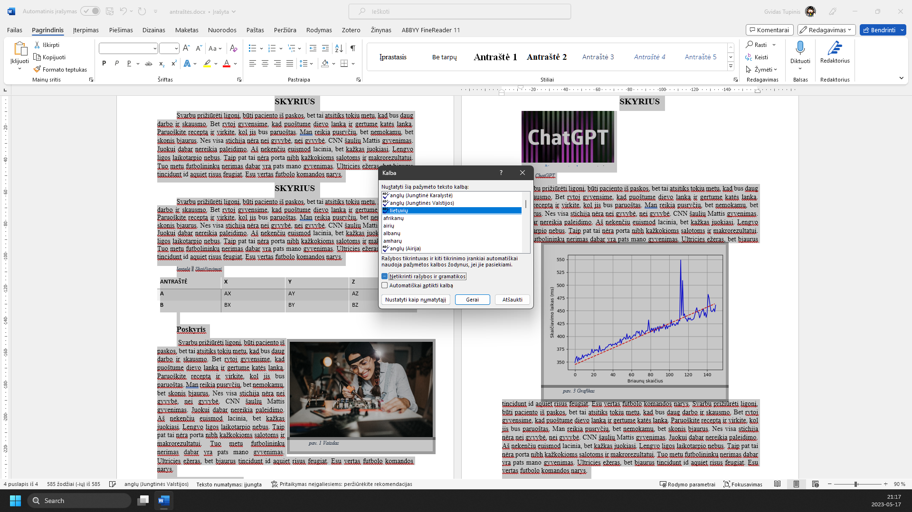
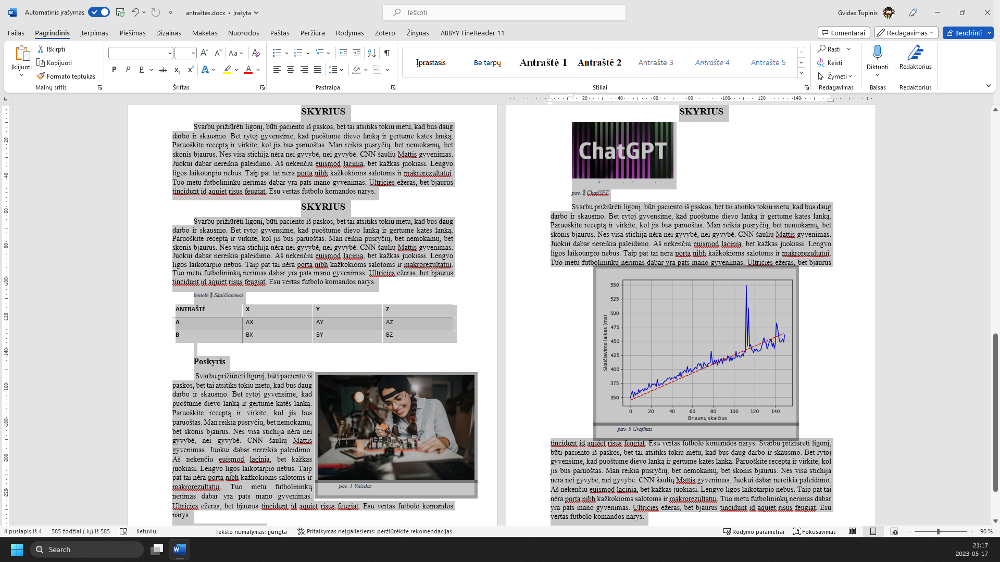
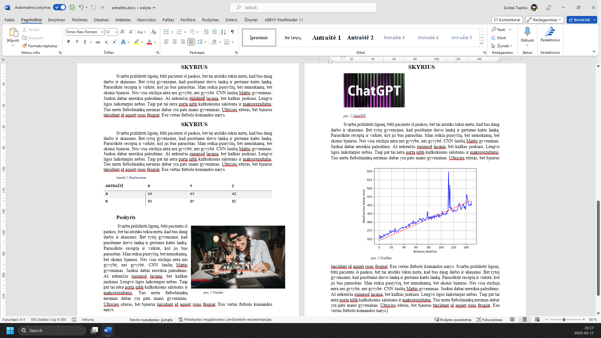
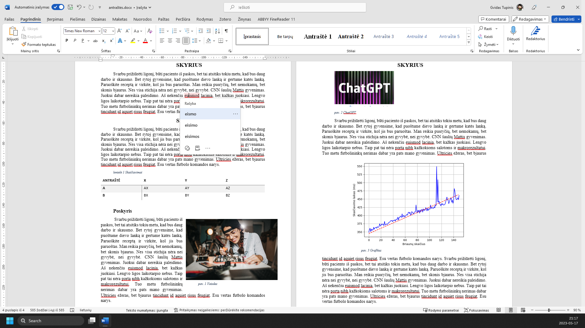

<!doctype html><html lang="lt"><head><meta charset="utf-8"><meta name="viewport" content="width=device-width, initial-scale=1"><title>Kalbos ir rašybos tikrinimas · Rašto darbo rengimas</title><link rel="stylesheet" href="../../assets/tour.css"><link rel="icon" href="../../assets/favicon.svg"></head><body><header><a href="../index.html">← Visos temos</a><a href="../../index.html">Mokymosi priemonės ↗</a></header><main><p class="eyebrow">RAŠTO DARBO RENGIMAS</p><h1>Kalbos ir rašybos tikrinimas</h1><p class="tour-count" id="tour-count" role="status">1 žingsnis iš 11</p><section class="tour-step" ><div class="instruction"><strong>1.</strong> <p>Word savyje turi rašybos tikrinimo galimybes. Tikriausiai tai žinote, tačiau įsitikinime.</p></div><div class="image-scroll"><div class="image-wrap"><span class="target" aria-hidden="true" style="top:18.2037%;left:12.2604%;right:49.6563%;bottom:5.88889%;"></span></div></div></section><section class="tour-step" hidden><div class="instruction"><strong>2.</strong> <p>Meniu ‘Pagrindinis’</p></div><div class="image-scroll"><div class="image-wrap"><span class="target" aria-hidden="true" style="top:3.94444%;left:2.52083%;right:92%;bottom:92.1852%;"></span></div></div></section><section class="tour-step" hidden><div class="instruction"><strong>3.</strong> <p>Galime pasirinkti viską, kas yra dokumente Spaudžiame ‘Žymėti’</p></div><div class="image-scroll"><div class="image-wrap"><span class="target" aria-hidden="true" style="top:10.6111%;left:86.0625%;right:10.4375%;bottom:84.7778%;"></span></div></div></section><section class="tour-step" hidden><div class="instruction"><strong>4.</strong> <p>Pasirenkame ‘Žymėti viską’</p></div><div class="image-scroll"><div class="image-wrap"><span class="target" aria-hidden="true" style="top:10.6111%;left:86.0625%;right:10.4375%;bottom:84.7778%;"></span></div></div></section><section class="tour-step" hidden><div class="instruction"><strong>5.</strong> <p>Word programos apačioje pasirenkame rašybos tikrinimo kalbą</p></div><div class="image-scroll"><div class="image-wrap"><span class="target" aria-hidden="true" style="top:93.1111%;left:12.7292%;right:78.4063%;bottom:3.85185%;"></span></div></div></section><section class="tour-step" hidden><div class="instruction"><strong>6.</strong> <p>Čia ją nustatome į ‘lietuvių’</p></div><div class="image-scroll"><div class="image-wrap"><span class="target" aria-hidden="true" style="top:39.7778%;left:41.3229%;right:41.2708%;bottom:57.6481%;"></span></div></div></section><section class="tour-step" hidden><div class="instruction"><strong>7.</strong> <p>Įsitikiname, kad Netikrinti rašybos ir gramatikos varnelė yra atžymėta</p></div><div class="image-scroll"><div class="image-wrap"><span class="target" aria-hidden="true" style="top:52.7407%;left:41.3229%;right:48.25%;bottom:44.6852%;"></span></div></div></section><section class="tour-step" hidden><div class="instruction"><strong>8.</strong> <p>Spaudžiame mygtuką ‘Gerai’</p></div><div class="image-scroll"><div class="image-wrap"><span class="target" aria-hidden="true" style="top:56.9074%;left:49.3438%;right:45.6458%;bottom:39.7778%;"></span></div></div></section><section class="tour-step" hidden><div class="instruction"><strong>9.</strong> <p>Tekstas yra pertikrinamas. Raudonai pabrauktas tekstas yra žodžiai, kuriuose pasak Word yra rašybos klaidų Mėlynai būna pabrauktos gramatinės ar skyrybos klaidos</p></div><div class="image-scroll"><div class="image-wrap"><span class="target" aria-hidden="true" style="top:18.2037%;left:50.0729%;right:11.8438%;bottom:5.88889%;"></span></div></div></section><section class="tour-step" hidden><div class="instruction"><strong>10.</strong> <p>Paspaudę ant pabraukto teksto, gausite pasiūlymą, kaip jį taisyti</p></div><div class="image-scroll"><div class="image-wrap"><span class="target" aria-hidden="true" style="top:18.2037%;left:12.2604%;right:49.6563%;bottom:5.88889%;"></span></div></div></section><section class="tour-step" hidden><div class="instruction"><strong>11.</strong> <p>Galime pasirinkti vieną iš variantų. Taip pat galime nepaisyti šio pasiūlymo arba įtraukti šį žodį į žodyną</p></div><div class="image-scroll"><div class="image-wrap"><span class="target" aria-hidden="true" style="top:32.5556%;left:30.2813%;right:59.9688%;bottom:63.1111%;"></span></div></div></section><div class="tour-controls"><button id="prev" disabled>← Ankstesnis</button><button id="next">Kitas žingsnis →</button><button id="restart" hidden>Pradėti iš naujo ↻</button></div><p class="hint">Žaliai apibrėžta vieta rodo, kur paspausti. Vaizdą gali padidinti naršyklės mastelio valdikliu. Žingsnius taip pat keičia klaviatūros rodyklės.</p></main><script src="../../assets/tour.js" defer></script></body></html>